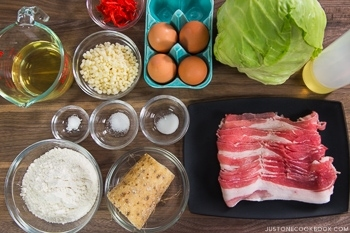

Popular street food from Osaka, Japan, Okonomiyaki is a savory version of Japanese pancake, made with flour, eggs, shredded cabbage, and your choice of protein, and topped with a variety of condiments
Okonomiyaki (お好み焼き) is sometimes called “Japanese savory pancake” or “Japanese pizza”, but personally, I think it’s more like a dish between savory pancake and frittata. It’s made with flour, eggs, tempura scraps (tenkasu), cabbage, and pork belly slices and topped with a variety of condiments like okonomiyaki sauce, Japanese mayonnaise, dried seaweed, and dried bonito flakes. If you don’t eat pork or prefer another protein choice, this dish is very adaptable. The possibility for the filling and topping choices are endless, which is why this dish in Japanese translates to “grilled as you like it” – Okonomi (as you like it) Yaki (grill).Gather all the ingredients.
